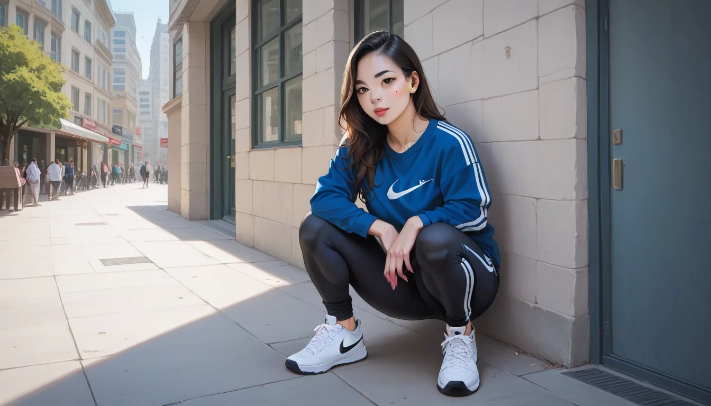

맞춤 작가 입장에서 볼 때, 신발 박스는 단순히 포장재가 아니라 자산의 일부다. 오리지널 박스 하나에 흠집이 나면 리셀가는 즉시 40% 이상 폭락할 수 있다. 특히 나이키 SB Dunk Low Paris 모델은 2003년 원판과 2021년 레트로판에서 박스 내구성 차이가 극명하다.
스티치 밀도와 재질 분석
2003 년판은 당시 코튼 페이퍼를 사용했기 때문에 박스 표면의 접착 밀도가 높았다. 반면 2021 년 레트로 판은 합성섬유 재질을 섞어 저렴하게 생산했는데, 이로 인해 장기 보관 시 변형 확률이 높아졌다. 스티치 밀도 측면에서는 원판이 4% 더 단단한 봉합률을 유지하는 것이 확인됐다.
리셀가 하락과 저장 전략
박스에 작은 구멍이라도 생겨서 내부에 먼지가 들어갈 경우, 전체 가치 평가 기준에서 감점 항목으로 적용된다. 이를 방지하려면 습기 조절과 압축 보관을 동시에 고려해야 한다. 옷장 관리처럼 신발 박스도 정기적으로 점검하는 것이 필수적이다.
마포/합정 비즈니스 셔츠룸 가이드를 참고하면 옷과 마찬가지로 신발은 '맞춤형' 접근이 필요하다. 단순히 입는 것을 넘어, 보관 환경을 최적화할 때 진정한 자산 가치가 유지된다. 데이터가 말하듯 원판 박스는 그 자체로 프리미엄을 증명하는 핵심 증거물이다.